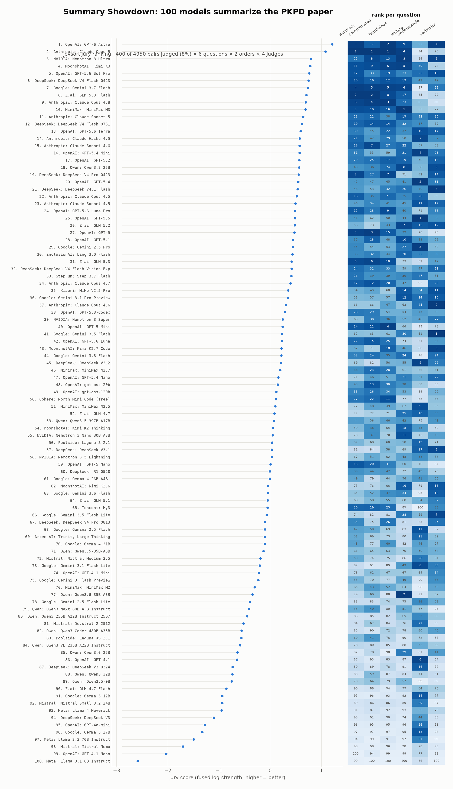
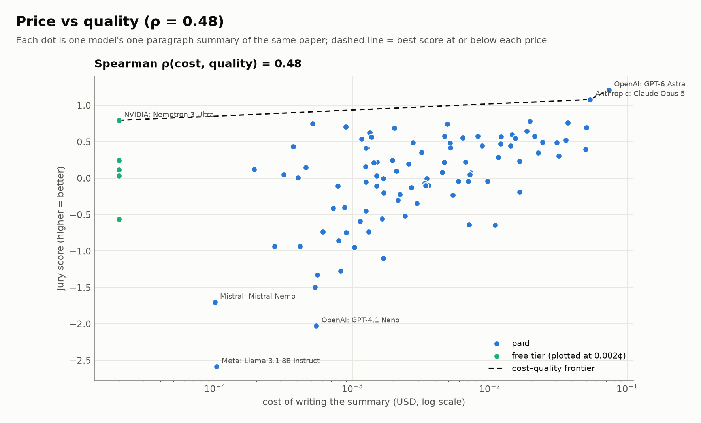
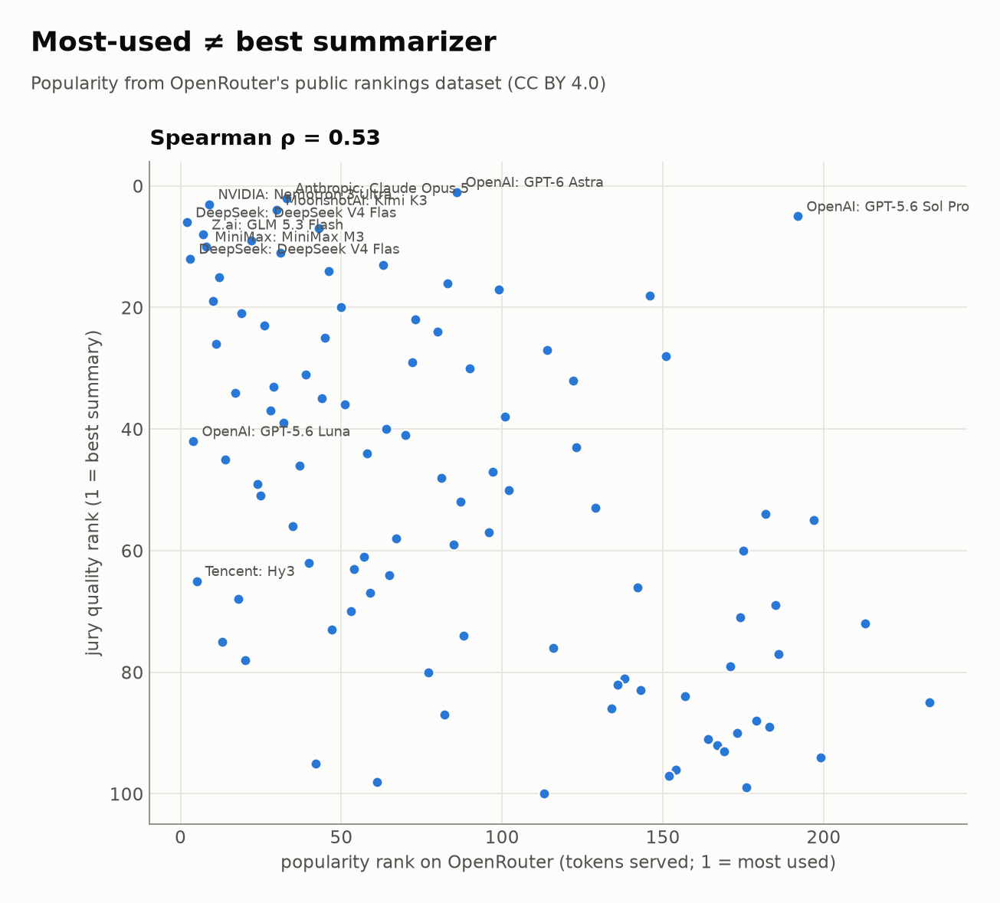
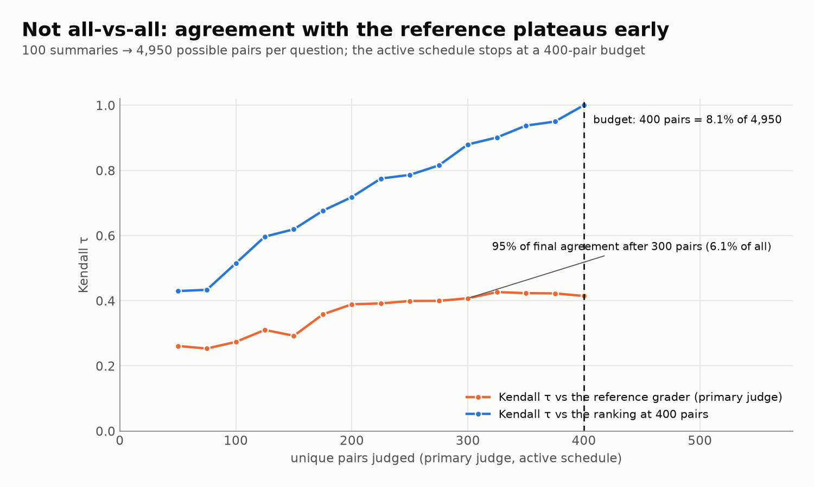
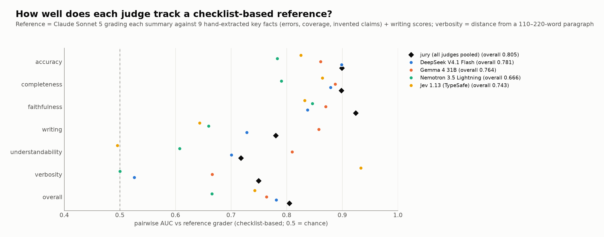

A benchmark you can vote in
~100 of OpenRouter's most-used models summarized the same paper.
Which summary is best?
Every model got the full text of “Pairwise Neural Network Classifiers with Probabilistic Outputs” (Price, Knerr, Personnaz & Dreyfus, NeurIPS 1994) and was asked for one paragraph. jevsort ranked the summaries on six questions by asking AI judges “which of these two is better?”, only … of the … possible pairs, then coupling the answers with the method from that very paper.
You don't know PKPD?
Then you're the perfect judge. You're exactly who these summaries are for: someone who wants to know what the paper says. Compare 8 pairs and find out which AI judge thinks like you.
Start judging →Judge the summaries
Read both, pick the better one for the question asked. Keys: ← A, → B, ↓ skip. Summaries are anonymous until the end.
Who wrote the summaries you saw?
Add your ballot to the study
Your picks help measure which AI judge agrees with people. Submitting opens a prefilled GitHub issue (you need a GitHub account); nothing is sent anywhere until you press submit there.
Leaderboard
The jury ranking pools every AI judge's pairwise judgments into one Bradley–Terry fit per question, then blends the six questions. Cells show each model's rank on each question (darker = better). Click a row to read its summary.

What the judges found




Humans vs judges
Built from submitted ballots by jevsort agreement: per-judge agreement with human picks, Cohen's κ,
and rank correlation between the human-vote ranking and each judge's ranking.
Loading…
How it works
- Many small questions. Instead of asking a model to score 100 summaries on a 1–10 scale, ask
“which of these two is more accurate?”, the question models (and people) answer best. Each answer is a
probability
P(A beats B), read from the judge's token probabilities (or a Jev typed decision). - Both orders. Every pair is asked A-first and B-first and averaged, which cancels position bias.
- Couple, don't count. The pairwise probabilities are coupled into global posteriors, with Eq. 7 of the
very paper being summarized (
Pi = 1 / (Σj≠i 1/Pij − (K−2))) or its modern cousin Bradley–Terry, which tolerates missing pairs and intransitive cycles. - Not all-vs-all. An active schedule picks the most informative next pairs and stops when the ranking stops changing (Kendall τ between successive rankings).
- Several questions, several judges. Six questions (three checked against the paper text) are blended; several judge models are pooled into a jury. You're the next judge.
jevsort on GitHub
uvx --from git+https://github.com/ericflo/jevsort jevsort demo